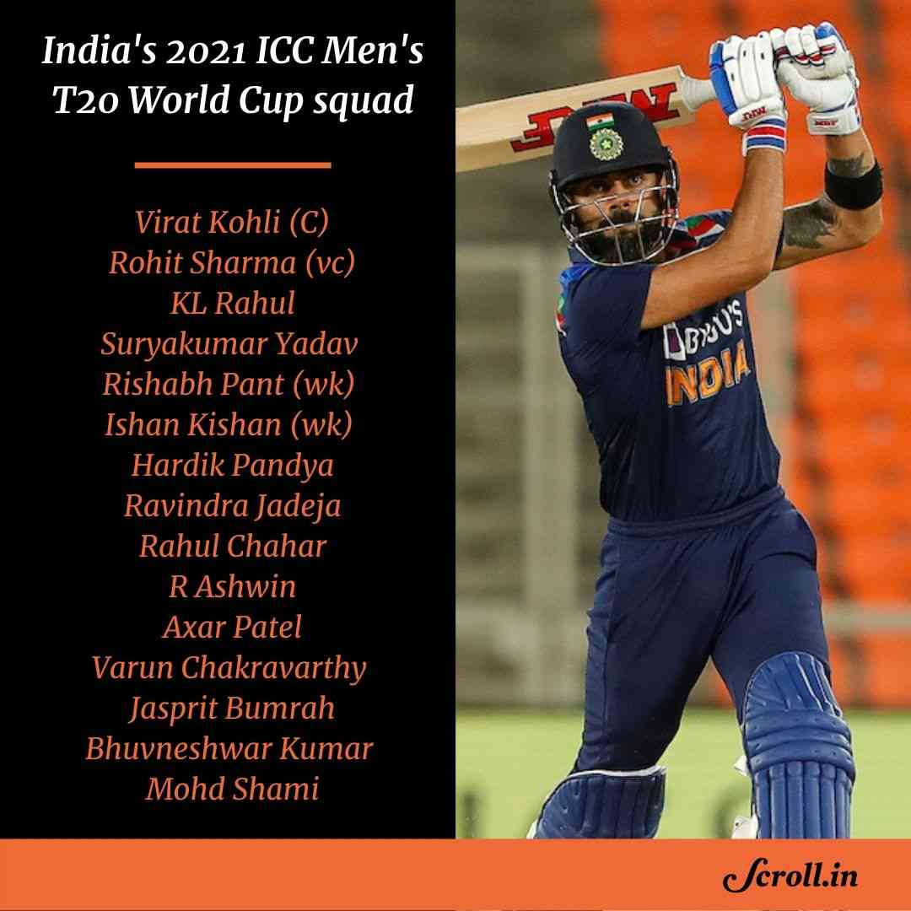
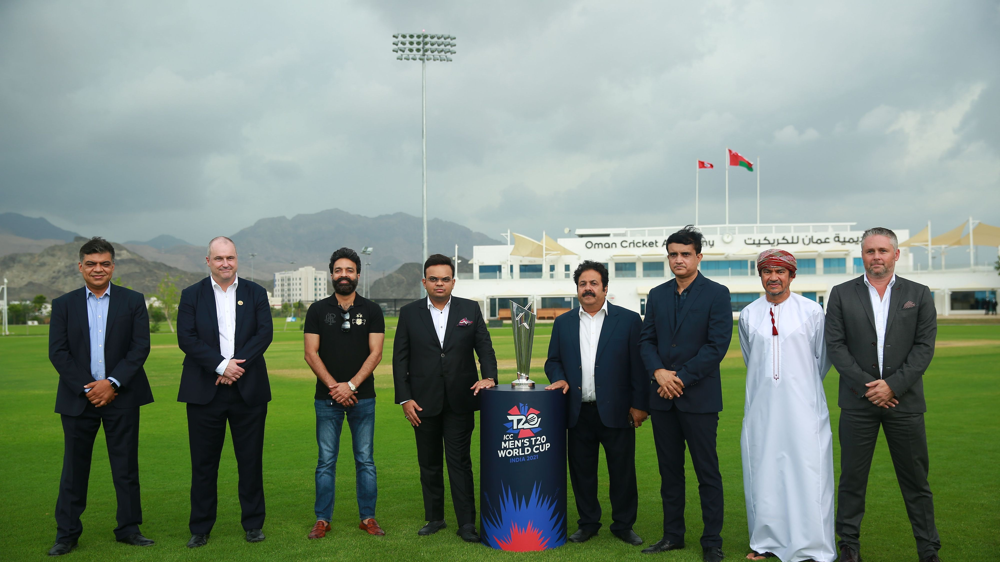
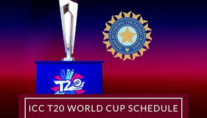

T20 CRICKET WORLD-CUP OCT-NOV 2021
|
 |
 |
 |
World cricket is gearing up for the biggest T20I tournament which is scheduled to start from October 17 in the United Arab Emirates. India, Pakistan, Bangladesh, Australia, England have announced their squads for the 12-team tournament. So far, India, Australia, New Zealand, Pakistan, Bangladesh, Oman and Papua New Guinea have announced their squads. As per the ICC rules, teams can name a 15-member squad and 3 reserves. The last date of submission is 10th September. Boards are also allowed to make changes in the squad till October 10th.
| GROUP I | GROUP II |
|---|
- AUSTRALIA
- ENGLAND
- SOUTH AFRICA
- WEST INDIES
|
- INDIA
- NEW ZEALAND
- PAKISTAN
- AFGANISHTAN
|
In the event of teams finishing on equal points at the end of the Second Round, the right to play in the Semi-Final will be decided in the following order of priority:
- nea, Muscat (14h00); Bangladesh v Scotland, Muscat (18h00)
- 18 Oct: Ireland v Netherlands, Abu Dhabi (14h00); Sri Lanka v Namibia, Abu Dhabi (18h00)
- 19 Oct: Scotland v PNG, Muscat (14h00); Oman v Bangladesh, Muscat (18h00)
For every single details on event, live updates and video steaming follow the links below: